4 Voting 46 times to choose a Presidential candidate
“Don’t write so that you can be understood; write so that you can’t be misunderstood.”
Background In 1912 the battle for the Democratic Presidential nomination was particularly fierce. Woodrow Wilson finally won on the 46th ballot.
Questions How did the support for the various candidates change during the voting? When were the crucial moments?
Sources Woodson (1912)
Structure The number of votes received by each candidate from each state in each ballot (3839 observations of 4 variables).
4.1 A first look at the 1912 Democratic Convention
American political conventions are an important part of the four-year election cycle, when the parties’ presidential candidates are nominated. For many years the winning candidates have been known before the conventions started. That was not always the case. In 1912 Woodrow Wilson was only selected on the 46th ballot.
Wilson is known for his participation at the Paris Peace Conference after World War I and the fourteen points for peace he propounded. His regressive policy on racial segregation is not so well-known and was not apparent before his election as President either. W. E. B. Du Bois, the famous black sociologist known for his maps and charts, campaigned for Wilson, but must have been very disappointed by Wilson’s actions afterwards.
Code
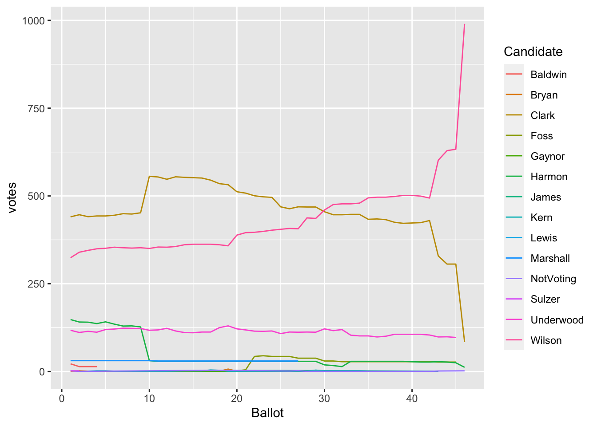
Figure 4.1: Votes for the candidates over the 46 ballots
Figure 4.1 shows the development of delegate support for the candidates during the convention. There were two main contenders, Wilson and Clark, with Clark initially ahead and then going even further ahead before Wilson gradually caught up with him and edged in front. The convention finally turned for Wilson in the last few ballots.
While the default plot in Figure 4.1 tells the main story, there is other information in the data too.
4.2 The USA in 1912 and 2020
The USA in 1912 was not the same as the USA in 2020. There were only 48 states. Arizona and New Mexico achieved statehood in the early part of 1912, while Alaska and Hawaii did not join the Union until 1959. These territories had delegates at the Convention as did Washington DC and Puerto Rico. The numbers of delegates in 1912 were far fewer in total than at the Democratic Convention in 2020. There were 1088 in 1912 whereas there were 3979 pledged delegates in 2020. (There were other kinds of delegate in 2020, but the most relevant by state were the pledged delegates.) Figure 4.2 compares the numbers of delegates per area for the two Conventions. The states have been ordered by number of delegates in 1912 and coloured by the four main regions used by the Census Bureau. California and Florida stand out as having substantially bigger shares of delegates. Iowa (which had the same number of delegates as California in 1912) and Missouri are amongst the losers.
Code
dcs <- DC1912 %>% group_by(State, Ballot) %>% summarise(bv=sum(Votes))
dcs <- dcs %>% ungroup() %>% group_by(State) %>% summarise(mxb=max(bv))
data(DC1912dels)
delsC <- full_join(DC1912dels, dcs)
delsC <- delsC %>% mutate(Mxb=ifelse(is.na(mxb), 0, mxb))
delsC <- delsC %>% mutate(state=fct_reorder(State, -Mxb))
delsCl <- delsC %>% pivot_longer(cols=c(TotP, mxb), names_to="Year", values_to="Delegs")
delsCl <- delsCl %>% mutate(year=ifelse(Year=="mxb", "1912", "2020"))
ggplot(delsCl, aes(state, weight=Delegs)) + geom_bar(aes(fill=region)) + xlab(NULL) + ylab(NULL) + coord_flip() + facet_wrap(vars(year), nrow=1, scales="free_x") + scale_fill_colorblind()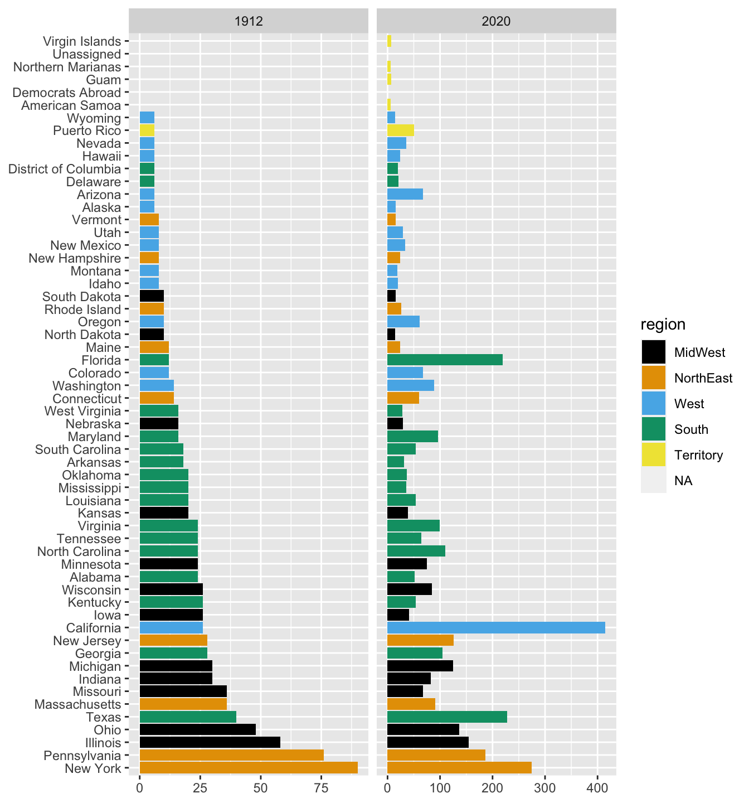
Figure 4.2: Numbers of delegates by state and territory at the 1912 and 2020 Democratic conventions (different horizontal scales)
As the total numbers of delegates have increased almost fourfold, the percentage shares of delegates by state were compared. Figure 4.3 is a scatterplot of those shares in 2020 against the shares in 1912. The points are coloured by region again and the point areas are proportional to the numbers of delegates in 2020. The five states with the most delegates in 2020 have been labelled. The big increases for California and Florida stand out again and in this plot Texas does too. It is interesting to see that California had a bigger share of delegates in 2020 than New York had in 1912. Puerto Rico, which had relatively few delegates at both conventions, has been left out, as it counts as a territory and is not in one of the four regions.
Code
delsC <- delsC %>% mutate(all12=sum(mxb, na.rm=TRUE), mxp=100*mxb/all12, all20=sum(TotP), TotPp=100*TotP/all20)
delsCx <- na.omit(delsC) %>% filter(!(state=="Puerto Rico"))
delsS <- ggplot(delsCx, aes(mxp, TotPp)) + geom_point(aes(col=region, size=TotP)) + xlab("1912") + ylab("2020") + theme(legend.position="bottom", legend.title=element_blank(), axis.title.y = element_text(angle = 0)) + guides(colour = guide_legend(nrow = 1), size="none") + xlim(0,11) + ylim(0,11) + geom_abline(intercept=0, slope=1, linetype="dotted") + geom_text(data=delsC %>% filter(TotP > 180), aes(label=state), nudge_y=-0.45) + scale_colour_colorblind()
delsS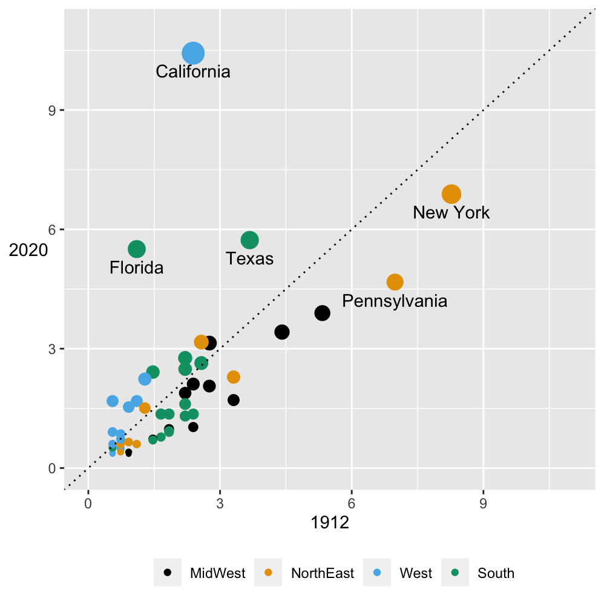
Figure 4.3: Percentage state shares of delegates at the 1912 and 2020 Democratic conventions (point sizes are proportional to the number of delegates in 2020)
What happened in the different regions can be more easily assessed using facets. Figure 4.4 shows the scatterplot of Figure 4.3 faceted by region. Most of the Western states, but not all, increased their share like California, but by smaller amounts. Only one MidWest state out of 12 increased its share, albeit slightly. That turned out to be Michigan. States in the NorthEast also lost share.
Code
delsJ <- ggplot(delsCx, aes(mxp, TotPp)) + geom_point(aes(col=region, size=TotP)) + xlab("1912") + ylab("2020") + theme(legend.position="none", legend.title=element_blank(), axis.title.y = element_text(angle = 0)) + guides(size="none") + xlim(0,11) + ylim(0,11) + geom_abline(intercept=0, slope=1, linetype="dotted") + facet_wrap(vars(region)) + scale_colour_colorblind()
delsJ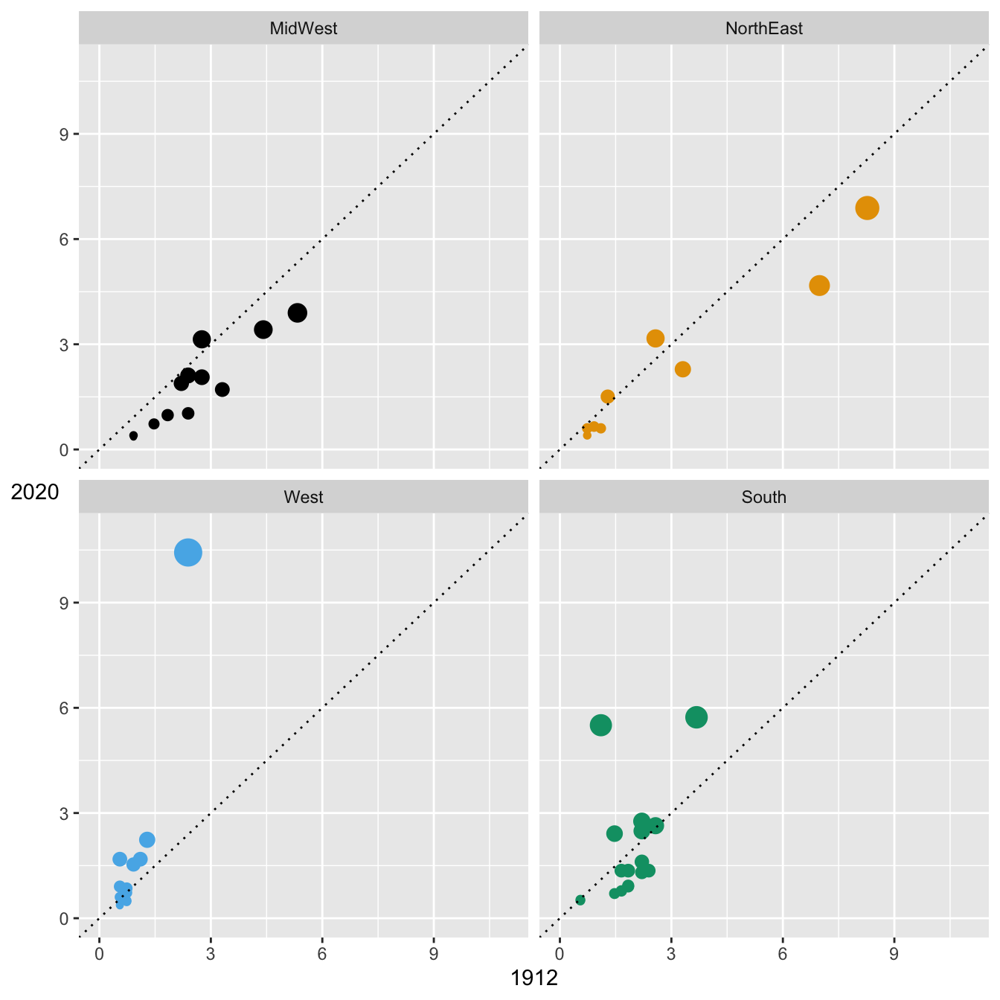
Figure 4.4: Percentage state shares of delegates by region
Code
There is a further distribution of votes per state to consider, their votes in the Electoral College that actually elects the President. Figure 4.5 shows scatterplots of the number of delegates per state v. the number of Electoral College votes in 1912 and 2020. Alaska, Hawaii, Puerto Rico are excluded for 1912 (they had no Electoral College votes then), as is D.C. which first got Electoral College votes in 1964. Many smaller states had the same number of Electoral College votes, so there is a lot of overplotting.
There is a simple linear relationship, shown by the dotted line, that the number of delegates a state had at the Democratic Convention in 1912 was twice the state’s number of Electoral College Votes—with one exception down to the bottom left: New Mexico had 8 delegates, but only 3 Electoral College Votes.
The picture in 2020 was more varied. In this plot the dotted line is a regression on the data with a slope of 7.7. New York and Pennsylvania had more delegates per electoral vote and Texas fewer.
Code
data(DC1912evs)
dcsx <- left_join(dcs, DC1912evs)
gev1 <- ggplot(dcsx, aes(y19121928, mxb)) + geom_point() + xlab("Electoral College votes") + ylab("Convention delegates") + xlim(0,50) + ylim(0,100) + theme(legend.position="none") + geom_abline(intercept=0, slope=2, linetype="dotted")
EV2020x <- right_join(DC1912dels, DC1912evs)
m1 <- lm(data=EV2020x, TotP~y20122020)
gev2 <- ggplot(EV2020x, aes(y20122020, TotP)) + geom_point() + xlab("Electoral College votes") + ylab("Convention delegates") + geom_abline(intercept=m1$coefficients[1], slope=m1$coefficients[2], linetype="dotted") + geom_text(data=EV2020x %>% filter(TotP > 160), aes(label=State), size=3, colour="blue", nudge_y=-9, nudge_x=-4)
gev1 + gev2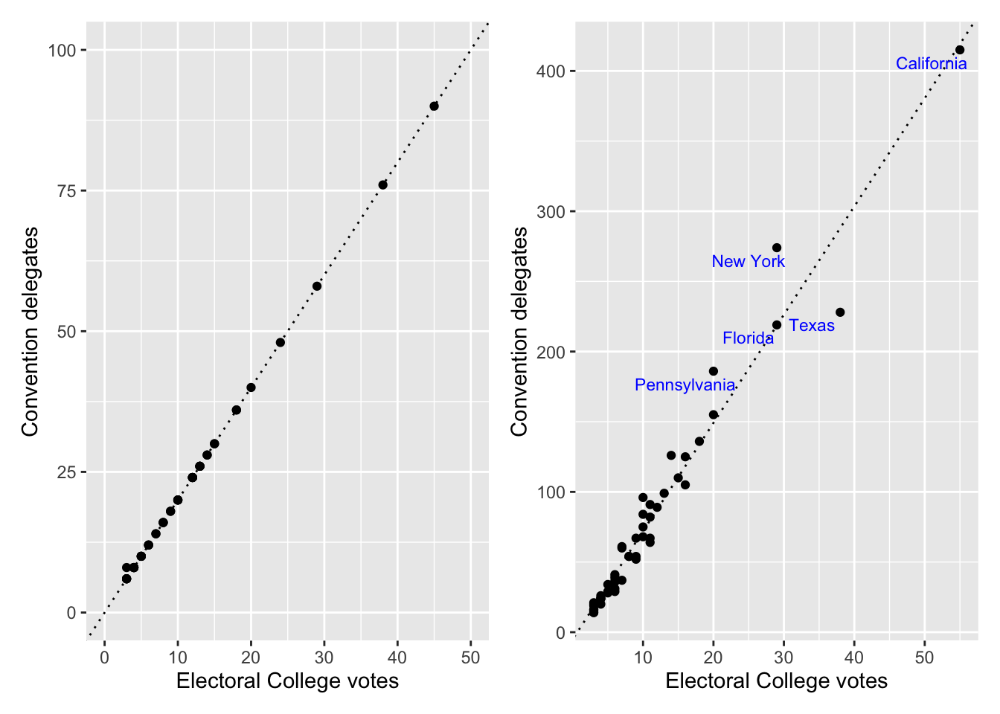
Figure 4.5: Delegates and Electoral College votes by state in 1912 (left) and 2020 (right)
4.3 How the nomination contest unfolded
In 1912 the Republicans held their convention first and the party was torn apart by the dispute between the supporters of a previous President, Theodore Roosevelt, and the then President, William Howard Taft. Roosevelt started a new party after the convention and it was expected that splitting the Republican vote would lead to the Democrats’ winning the election. The Republicans and former Republicans together got 7.6 million votes in the election, while the Democrats won only 6.3 million votes, but they won 40 of the 48 states and swept the Electoral College.
There is a good chapter on the 1912 Democratic convention in the first volume of Link’s biography of Woodrow Wilson (Link (1947)). The main source for the analysis here is the official report on the convention (Woodson (1912)) that includes all the counts in detail.
Code
dcX <- DC1912 %>% expand(State, Candidate, Ballot)
dcY <- DC1912 %>% right_join(dcX)
dcY[is.na(dcY$Votes), "Votes"] <- 0
dcx <- dcY %>% group_by(Ballot, Candidate) %>% summarise(v=sum(Votes))
dcx <- dcx %>% group_by(Candidate) %>% mutate(vm=max(v))
ord45 <- dcx %>% filter(Ballot=="45") %>% ungroup() %>% mutate(candidate=fct_reorder(factor(Candidate), v, max))
dcx <- dcx %>% mutate(candidate=factor(Candidate, levels=levels(ord45$candidate)))
gcv <- ggplot(dcx %>% filter(vm>35), aes(Ballot, v, group=candidate)) + geom_point(aes(col=candidate), size=0.5) + geom_step(aes(col=candidate)) + geom_hline(yintercept=1088*2/3, linetype="dashed", colour="grey70") + geom_hline(yintercept=1088/2, linetype="dotted", colour="grey50") + theme(plot.title = element_text(vjust = 2), legend.title=element_blank(), legend.text=element_text(size=10)) + ylab(NULL) + guides(color = guide_legend(reverse = TRUE)) + scale_colour_manual(values=colorblind_pal()(8)[c(2, 3, 4, 7, 1)])
gcv + ggtitle("Wilson won the 1912 Democratic nomination on the 46th ballot")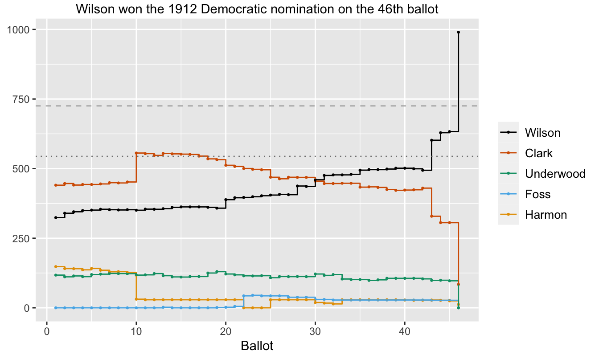
Figure 4.6: Votes for the main candidates over the 46 ballots
Figure 4.6 is a revised version of Figure 4.1 restricted to the more important candidates. A horizontal dashed line marking the level of two-thirds support that was needed to win the nomination has been added, as has a horizontal dotted line marking 50% support. Here are the key developments.
4.3.1 Developments
- On the 10th ballot, New York, with 90 delegates, the largest number of any state, switched allegiance from Harmon to Clark, the front runner. This gave Clark an overall majority and it might have been expected that other states would follow. The supporters of Wilson and Underwood—a third candidate with hopes of being selected if Clark and Wilson deadlocked—held firm. They were strengthened by a speech by the three-time Democratic candidate for the Presidency, William Jennings Bryan, just before the 14th ballot. Bryan criticised Tammany Hall, the corrupt Democratic political machine in New York, and rallied the progressive wing of the party.
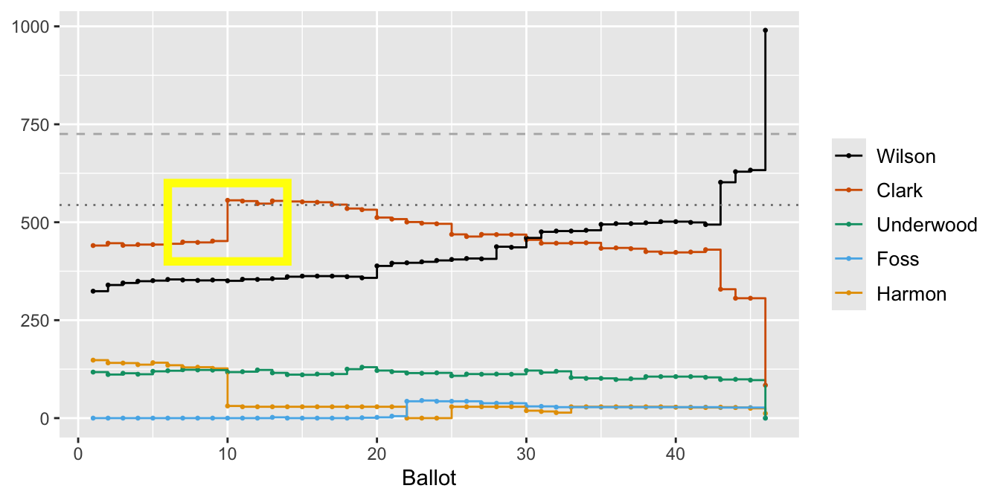
- During the steady decline in Clark’s support there was a gradual increase for Wilson, with minor jumps in support on the 20th ballot (when the 20 delegates of Kansas moved from Clark to Wilson) and on the 28th ballot (when Marshall of Indiana dropped out and 29 of the state’s 30 votes went to Wilson. Marshall went on to be chosen as the party’s Vice-Presidential candidate.)
Code
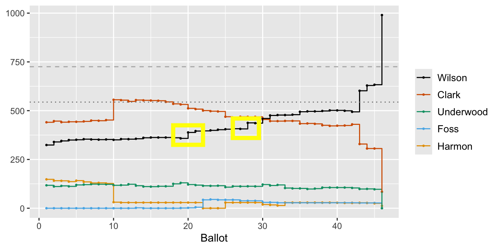
- The introduction of Foss on the 22nd ballot and the reintroduction of Harmon on the 25th ballot were attempts to find a compromise candidate. Neither gained ground.
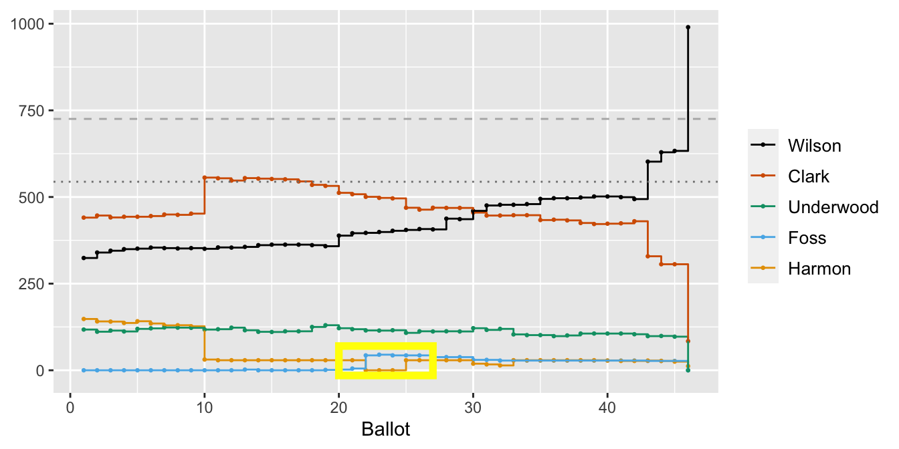
- Wilson’s breakthrough came on the 43rd ballot, when Illinois with 58 delegates went from Clark to Wilson. This was the first point at which Wilson had the support of more than half of the delegates.
Code
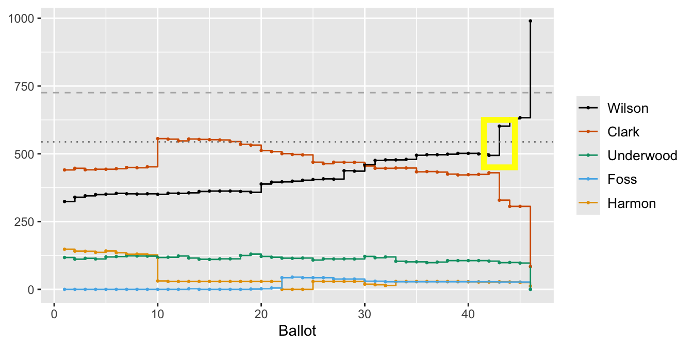
- Before the 46th ballot began, Underwood (with 97 delegates) withdrew without a recommendation to his supporters and it was clear that Wilson would win. Missouri, long-time supporters of Clark, insisted on a final ballot. Their spokesman said: “We are going to cast our vote for Clark on the last ballot. We have got to go back to Missouri.”
Code
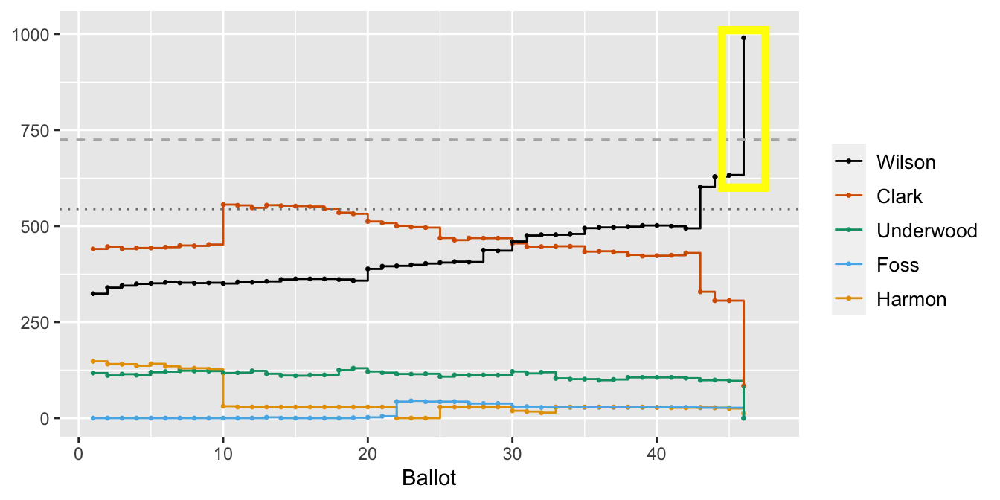
Some of these features, possibly the second and definitely the third, would be difficult to identify just from the graphic and without background information. Graphical analysis benefits from an understanding of what is being represented. Dramatic features are easy to spot, but still have to be interpreted. Descriptions of what took place indicate additional places to look in the graphic. Both approaches are valuable and they complement one another. Good graphics can provide summarising overviews, while reports flesh out the details. Neither alone is enough.
4.4 When did the ballots actually take place?
Using the ballot number as a measure of time is an approximation of what actually happened. The first ballot took place on the morning of Friday, 28 June, and the last ballot took place on the afternoon of Tuesday, 2 July. The official report of the convention (Woodson (1912)) does not record when exactly ballots were taken, but does record to the minute when the convention was adjourned and when it restarted. Making the assumption that each ballot took about the same time, and adding extra time for special polling of individual states and speeches, gives Figure 4.7.
Code
data(DC1912ballots)
dcxt <- left_join(dcx, DC1912ballots)
data(DC1912adjourns)
cand2 <- ggplot(dcxt %>% filter(vm>35), aes(DateT, v, group=candidate)) + geom_rect(data=DC1912adjourns, mapping=aes(xmin=StartT, xmax=EndT, ymin=-Inf, ymax=Inf), fill="grey", alpha=0.3, inherit.aes=FALSE) + geom_step(aes(col=candidate)) + geom_hline(yintercept=1088*2/3, linetype="dashed", colour="grey70") + geom_hline(yintercept=1088/2, linetype="dotted", colour="grey50") + theme(panel.background = element_rect(fill = "white", colour="white"), plot.title = element_text(vjust = 2), legend.title=element_blank()) + ylab(NULL) + geom_point(aes(col=candidate), size=0.75) + xlab(NULL) + scale_colour_manual(values=colorblind_pal()(8)[c(2, 3, 4, 7, 1)]) + guides(color = guide_legend(reverse = TRUE)) + scale_x_datetime(date_labels = "%e %B", breaks = c(as.POSIXct("1912-06-27 12:00:00 UTC"), as.POSIXct("1912-06-28 12:00:00 UTC"), as.POSIXct("1912-06-29 12:00:00 UTC"), as.POSIXct("1912-06-30 12:00:00 UTC"), as.POSIXct("1912-07-01 12:00:00 UTC"), as.POSIXct("1912-07-02 12:00:00 UTC")))
cand2a <- cand2 + ggtitle("Candidates' votes at the 1912 Democratic Convention plotted against time")
cand2a
Figure 4.7: Convention voting using estimated ballot times with the date labels at midday and adjournment periods shaded grey
This picture makes a different impression. Instead of a string of equally spaced events, there are bunches of ballots, separated by a number of breaks in the proceedings, especially that from midnight on the Saturday to 11am on the Monday. There were no official meetings on the Sunday. The crucial breakthrough for Wilson took place after the overnight break between Monday and Tuesday. Discussions must have been taking place all through the convention. Sometimes more than one plot is necessary to get the full picture.
Answers Many ballots took place without any change in support for the various candidates. There were up to six critical points that determined the result.
Further questions Which states voted as one during the convention? In which other years were there many ballots to select a candidate?